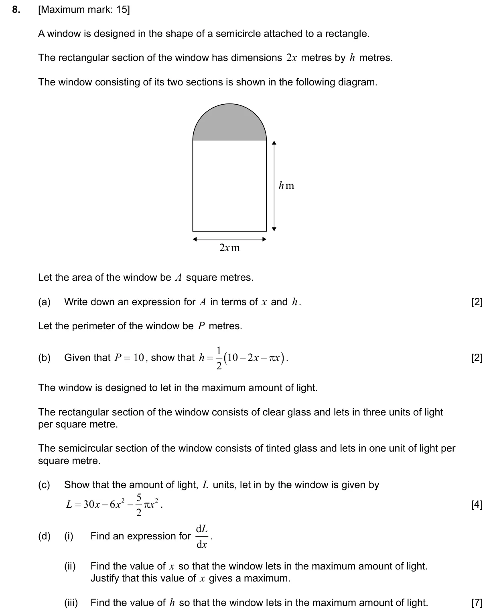
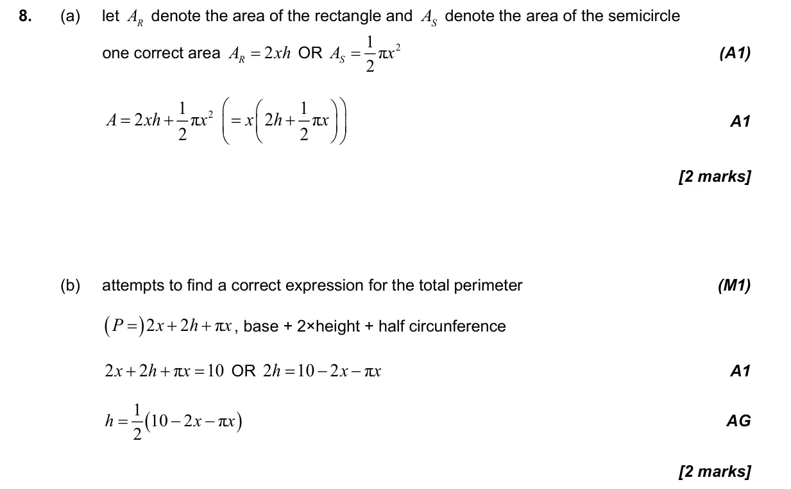
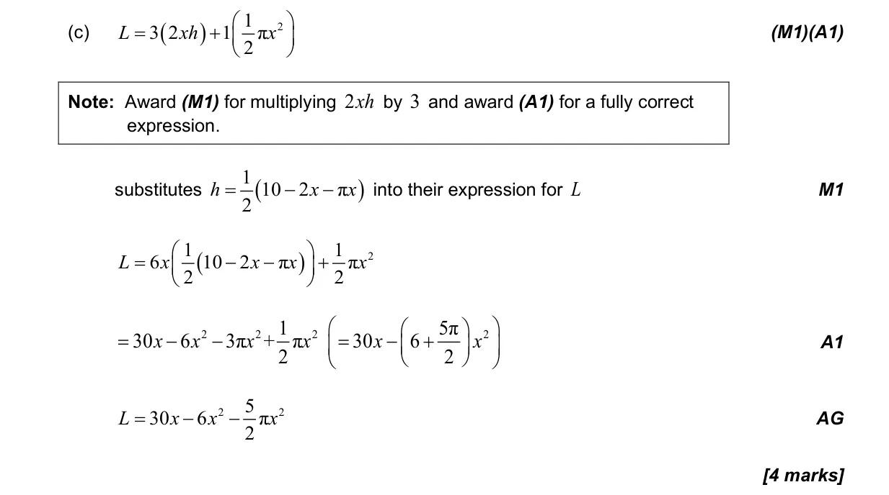
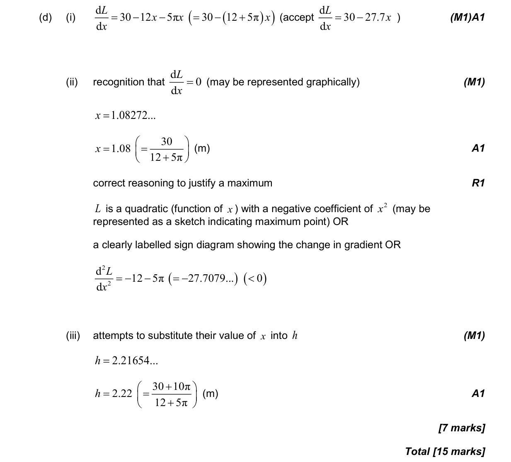

15 marks P2 TZ2 Section B Calculator 5.8 Optimization, local extrema and points of inflexion3.4 Circle: radians, arcs and sectors5.3 Differentiating polynomials, n in Z Question Hide breakdown abcd Markscheme 